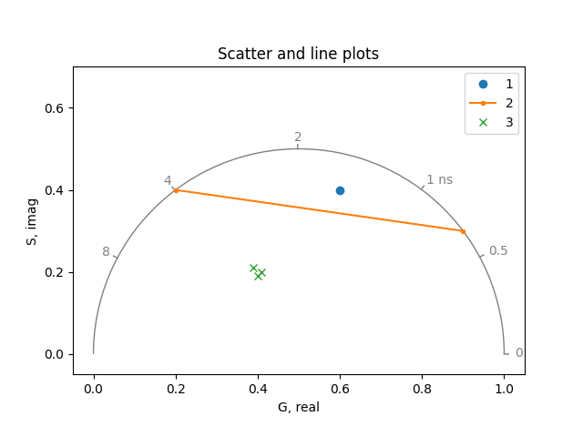

Phasor plot#
An introduction to plotting phasor coordinates.
The phasorpy.plot.PhasorPlot class is used to plot phasor
coordinates as scattered points, lines, two-dimensional histograms,
and contours.
The plots are supplemented with universal semicircles, polar grids,
polar cursors, component mixture indicators, and manual annotations.
Import required modules, functions, and classes:
import math
import numpy
from phasorpy.plot import PhasorPlot
rng = numpy.random.default_rng(42) # initialize random number generator
Empty phasor plot#
Create an empty phasor plot, showing the first quadrant and the universal semicircle:
plot = PhasorPlot()
plot.show()
Custom axes#
Create a phasor plot with custom axis limits, automatic ticks, and custom axis labels:
plot = PhasorPlot(
title='Custom axes',
xlabel='G',
ylabel='S',
xlim=(-0.1, 1.1),
ylim=(-0.1, 0.61),
xticks=None,
yticks=None,
)
plot.show()
Universal semicircle#
Create a phasor plot at a frequency of 80 MHz with custom lifetime ticks. Add a second, transformed universal semicircle for FRET acceptor coordinates:
plot = PhasorPlot(xlim=(-0.2, 1.1), title='Universal semicircle')
plot.semicircle(
frequency=80.0,
lifetime=[0, 0.5, 1, 2, 4, 8, 16],
color='tab:green',
label='donor',
)
plot.semicircle(
polar_reference=(0.9852, 0.5526), color='tab:red', label='acceptor'
)
plot.show()
Scatter and line plots#
Plot phasor coordinates as scattered points or lines:
Crosshair cursors#
Highlight specific phasor coordinates using Cartesian or polar lines, optionally limited by a radius:
plot = PhasorPlot(frequency=80.0, title='Crosshair cursors')
plot.cursor(0.7, 0.25, color='tab:blue', label='cartesian')
plot.cursor(
0.7, 0.25, color='tab:orange', polar=True, linestyle='--', label='polar'
)
plot.cursor(
0.2, 0.4, radius=0.1, crosshair=True, color='tab:red', label='radius'
)
plot.cursor(
0.45,
0.4,
radius=0.1,
crosshair=True,
polar=True,
linestyle='--',
color='tab:green',
label='radius|polar',
)
plot.show()

Cursors#
Highlight specific ranges of Cartesian or polar coordinates:
plot = PhasorPlot(frequency=80.0, title='Cursors')
plot.cursor(0.35, 0.3, 0.65, 0.1, color='tab:blue', label='rectangle')
plot.cursor(
0.35,
0.3,
0.65,
0.1,
polar=True,
color='tab:orange',
label='rectangle|polar',
)
plot.cursor(0.5, 0.5, radius=0.05, color='tab:red', label='circle')
plot.cursor(
0.1, 0.3, radius=0.05, radius_minor=0.1, color='tab:green', label='ellipse'
)
plot.cursor(
0.9,
0.3,
radius=0.05,
radius_minor=0.1,
angle='semicircle',
color='tab:purple',
label='semicircle aligned',
)
plot.show()
Multiple cursors sharing the same style can be plotted at once:
plot = PhasorPlot(frequency=80.0, title='Multiple cursors')
plot.cursor(
[0.2, 0.5, 0.8],
0.4,
radius=[0.05, 0.1, 0.05],
radius_minor=0.1,
angle='semicircle',
color=['tab:blue', '0.5', 'tab:orange'],
label=['blue ellipse', 'gray circle', 'orange ellipse'],
)
plot.show()
Alternatively, use polar coordinates and various options:
plot = PhasorPlot(frequency=80.0, title='Polar cursors')
plot.polar_cursor(0.6435, 0.5, color='tab:blue', label='crosshair')
plot.polar_cursor(0.5236, 0.6, 0.1963, 0.8, linewidth=2, label='rectangle')
plot.polar_cursor(
0.6435,
0.5,
radius=0.05,
radius_minor=0.1,
alpha=0.5,
fill=True,
color='tab:blue',
label='ellipse',
)
plot.show()
Component mixtures#
Show linear combinations of phasor coordinates or ranges thereof:
real, imag, weights = numpy.array(
[[0.1, 0.2, 0.5, 0.9], [0.3, 0.4, 0.5, 0.3], [2, 1, 2, 1]]
)
plot = PhasorPlot(frequency=80.0, title='Component mixtures')
plot.components(
real,
imag,
linestyle='',
marker='o',
labels=['A', 'B', 'C', 'D'],
fill=True,
color='tab:blue',
facecolor='lightyellow',
label='components',
)
plot.components(real, imag, weights, marker='o', label='mixture')
plot.show()
Two-dimensional histogram#
Plot a large number of phasor coordinates as a two-dimensional histogram:
real, imag = rng.multivariate_normal(
[0.6, 0.4], [[3e-3, -1e-3], [-1e-3, 1e-3]], (256, 256)
).T
plot = PhasorPlot(frequency=80.0, title='Two-dimensional histogram')
plot.hist2d(real, imag)
plot.show()
Contours#
Plot the contours of the density of phasor coordinates:
plot = PhasorPlot(frequency=80.0, title='Contours')
plot.contour(real, imag)
plot.show()
Image#
Plot a custom-colored image of a two-dimensional histogram (this functionality is planned for a future release):
plot = PhasorPlot(frequency=80.0, title='Image (not implemented yet)')
# plot.imshow(image)
plot.show()
Combined plots#
Multiple plots can be combined:
real2, imag2 = rng.multivariate_normal(
[0.9, 0.2], [[2e-4, -1e-4], [-1e-4, 2e-4]], 4096
).T
plot = PhasorPlot(
xlim=(0.35, 1.03), ylim=(0.1, 0.59), grid=False, title='Combined plots'
)
plot.semicircle(frequency=80.0, color='tab:purple')
plot.hist2d(real, imag, bins=64, cmap='Blues')
plot.contour(real, imag, bins=48, levels=3, cmap='summer_r', norm='log')
plot.hist2d(real2, imag2, bins=64, cmap='Oranges')
plot.plot(0.6, 0.4, 'o', color='tab:blue', label='Blues')
plot.plot(0.9, 0.2, 'o', color='tab:orange', label='Oranges')
plot.cursor(0.9, 0.2, color='tab:orange', polar=True)
plot.polar_cursor(math.atan2(0.4, 0.6), math.hypot(0.6, 0.4), color='tab:blue')
plot.show()
All quadrants#
Create an empty phasor plot showing all four quadrants:
plot = PhasorPlot(allquadrants=True, title='All quadrants')
plot.show()
Custom grid#
Customize the polar grid of an all-quadrants plot:
plot = PhasorPlot(
allquadrants=True,
grid={
'labels': ['', '450', '500 nm', '550', '600', '650', '700', ''],
'ticks': [430, 450, 500, 550, 600, 650, 700, 730],
'tick_space': numpy.linspace(430, 730, 16),
'angles': 8,
'radii': 2,
},
pad=0.2, # make space for labels
title='Custom grid',
)
plot.show()
Matplotlib axes#
The PhasorPlot class can use an existing matplotlib axes. The PhasorPlot.ax attribute provides access to the underlying matplotlib axes object, for example, to add annotations:
from matplotlib import pyplot
ax = pyplot.subplot(1, 1, 1)
plot = PhasorPlot(ax=ax, allquadrants=True, title='Matplotlib axes')
plot.hist2d(real, imag, cmap='Blues')
plot.ax.annotate(
'0.6, 0.4',
xy=(0.6, 0.4),
xytext=(0.2, 0.2),
arrowprops={'arrowstyle': '->'},
)
pyplot.show()
plot_phasor function#
The phasorpy.plot.plot_phasor() function provides a simpler
alternative to plot phasor coordinates in a single statement:
from phasorpy.plot import plot_phasor
plot_phasor(
real[0, :32],
imag[0, :32],
frequency=80.0,
marker='.',
title='plot_phasor function',
)
Total running time of the script: (0 minutes 1.114 seconds)